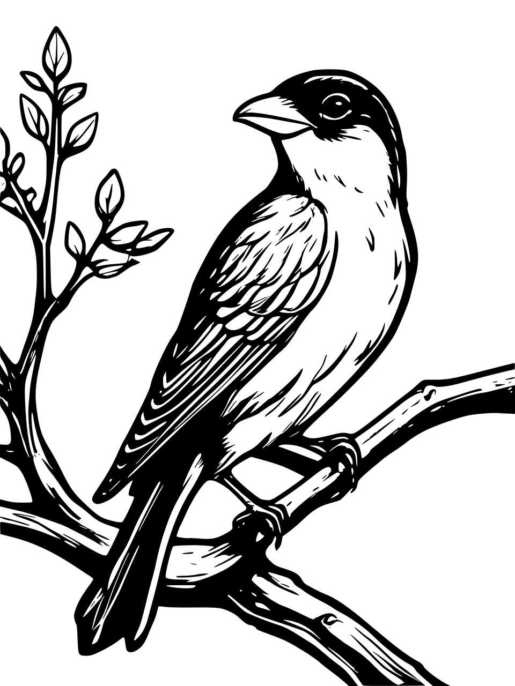

尝试点击我
喙部特点
鸟类的喙形态多样，与其食性和生活习性紧密相关。例如，食谷鸟类的喙通常粗厚而有力，适合破开硬壳；而捕食昆虫的小型鸟类喙则纤细尖锐，便于在枝叶间捕食。猛禽如隼和鹰的喙尖锐且呈钩状，适合撕裂猎物。
麻雀
习性
中国鸟类的习性多样，从栖息地选择到食物来源，都反映了它们对环境的适应。例如，一些鸟类偏爱森林环境，而有的则适应在水域中觅食。鸟类的社群行为也各不相同，有的鸟类独居，有的则形成大群集体活动。
麻雀
1.其分布相当广泛，除极寒冷的南北极和高山荒漠，在世界各地均有分布。2.麻雀喜欢栖息在有人类生活的各种生境。适应力强，性活泼，常集群活动。
3.麻雀的关节无法弯曲，因而只能采用跳跃的方式。
脚部特点
麻雀